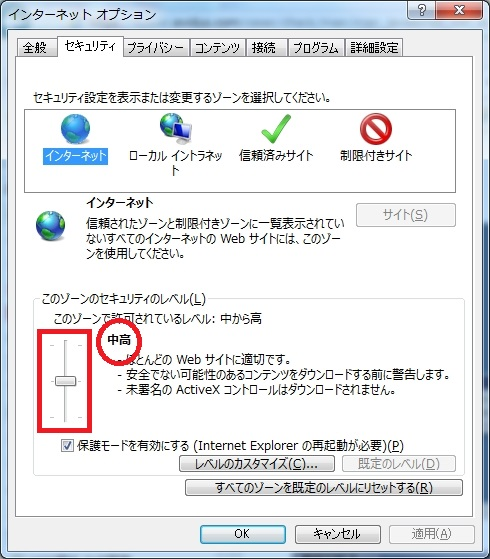

Windows Internet Explorer JavaScript利用設定手順

１．Internet Explorer のツール(歯車)をクリックして[イン ターネット オプション]を開きます。

２．インターネットオプションのプロパティが開いたら、上 部の【セキュリティ】タブをクリックしてください。 【セキュリティ】タブが開いたら、左にあるつまみを動かし てレベルを”中高”に設定してください。 設定されたら、【OK】をクリックして画面を閉じてください 。 これで設定できました。 ※ご注意ください※ レベルが“カスタム”となっている場合は、設定変更の前に、 ご利用のパソコンを管理されている方に必ず確認をしてから、 レベルの変更を行ってください。 変更する場合は【既定のレベル(D)】ボタンをクリックしてから、 レベルを変更してください。